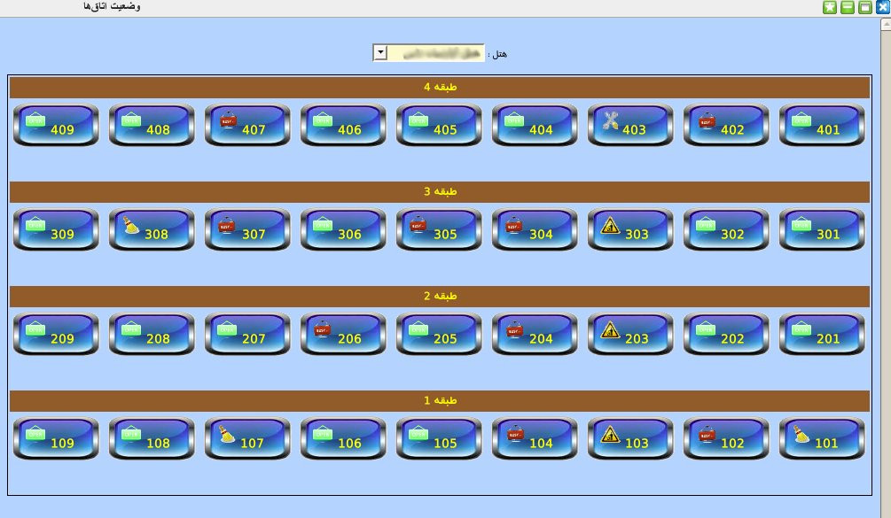
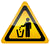
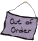
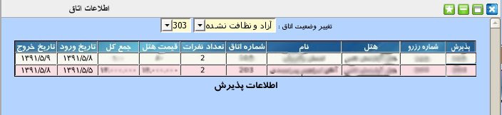

۱-وضعیت اتاق
این پنل یکی از پنل های کارآمد و مورد نیاز مدیریت میباشد. مدیریت می تواند با یک کلیک ساده وضعیت تمام اتاق های مجموعه هتل های خود را مشاهده نماید. برای مشاهده ی وضعیت اتاق های هر هتل ابتدا باید نام هتل مورد نظر را از منوی کشویی بالای صفحه انتخاب کنید.

اتاق ها براساس چیدمان در طبقات مختلف نمایش داده می شوند. آیکن نمایش داده شده در بر روی هر شماره اتاق نشانگر و ضعیت اتاق می باشد.
- اشغال
-  آزاد و نظافت نشده
 آزاد و نظافت شده
آزاد و نظافت شده- در حال نظافت
- در دست تعمیر
- خارج از سرویس
با کلیک بر روی هر اتاق وارد پنل اطلاعاتی اتاق مورد نظر شده و اطلاعات پذیرش اتاق را مشاهده نمود و همچنین وضعیت اتاق را تغییر داد.
